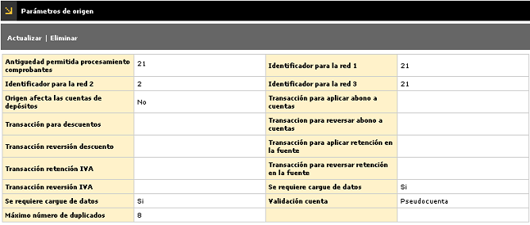
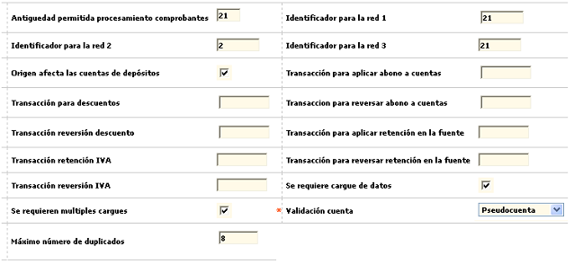

Origen de transacciones - Parámetros de origen |
En este formulario que se invoca desde el hipervínculo Parámetros de origen contenido en el formulario orígenes de transacciones se registran las condiciones particulares válidas para el origen seleccionado por el usuario.

El formulario contiene las opciones Actualizar, Eliminar.
Actualizar: Si el usuario invoca la opción Actualizar se despliega un nuevo formulario en el cual todos los campos son modificables.

Descripción de campos
Antigüedad permitida procesamiento comprobantes |
En este campo numérico de 3 dígitos se registra el número máximo de días calendario permitidos para recibir y procesar un comprobante, por cada origen. Por ejemplo en Canje nacional, si un comprobante supera una antigüedad de 90 días, puede ser devuelto automáticamente a la entidad que lo envío, puesto que los plazos estipulados de intercambio no han sido respetados. |
Identificador para la red 1 / 2 / 3 |
Campos alfanuméricos de 8 dígitos, en los que se puede registrar el código que identifica a la entidad financiera ante cada una de las respectivas Redes. |
Origen afecta las cuentas de depósitos |
En este campo la entidad señala si para el origen que se está parametrizando se debe tener en consideración o no la afectación a las cuentas de depósitos de los establecimientos. |
Transacción para aplicar abono a cuentas |
Campo alfanumérico de diez dígitos en el que se registra el código de la transacción que identifica, en la interface de Depósitos el abono a cuenta. |
Transacción para descuentos |
En este campo alfanumérico de diez dígitos se digita el código de transacción que identifica, en la interface de afectación a cuenta, el valor del descuento aplicado, el cual puede no aparecer y viajar en la interface en el valor neto del depósito. |
Transacción para reversar abono a cuentas |
Campo alfanumérico de diez dígitos en el que se registra el código de transacción que identifica, en la interface de Depósitos la reversión de un abono a cuenta |
Transacción reversión descuento |
En este campo alfanumérico de diez dígitos se registra el código de transacción que identifica, en la interface de afectación a cuenta, el valor de la reversión del descuento aplicado. |
Transacción para aplicar retención en la fuente |
Campo alfanumérico de diez dígitos en el que se ingresa el código de transacción que identifica, en la interface de Depósitos, la aplicación de la retención en la fuente. |
Transacción retención iva |
Campo numérico de hasta 6 dígitos en el cual se registra el código que identifica la transacción original que se está parametrizando y para la que se definen las demás condiciones del presente formulario. |
Transacción para reversar retención en la fuente |
Campo numérico de hasta 6 dígitos en el cual se registra el código que identifica la transacción original que se está parametrizando y para la que se definen las demás condiciones del presente formulario. |
Transacción reversión iva |
Campo alfanumérico de diez dígitos en el cual se ingresa el código de transacción que identifica, en la interface de afectación a cuenta, el valor de la retención del impuesto de IVA aplicado, el cual puede no aparecer y viajar en la interface en el valor neto del depósito. |
Se requiere cargue de datos |
En este campo la entidad señala si la fuente de recepción de movimiento corresponde a un archivo plano que debe ser cargado, ó la entrada de movimiento se hace en línea. |
Se requieren múltiples cargues |
Campo que se marca para indicar si para el origen es necesario efectuar mas de un cargue en la fecha de proceso. |
Validación cuenta |
En este campo tipo combo se puede seleccionar entre Pseudocuenta, Establecimiento o Cuenta, la raíz o punto de partida de que se dispone, acorde con el origen o franquicia, para identificar la cuenta de depósitos que debe ser afectada con los mismos. La pseudocuenta es un código de identificación de la cuenta asignado por la red o franquicia, al seleccionar esta opción, en el momento del cargue, el proceso de validación revisa que el establecimiento que está viajando tenga asociado dicho código. Al seleccionar establecimiento, el proceso de validación toma el establecimiento y lo asocia a la cuenta correspondiente. Si el establecimiento tiene asociadas varias cuentas el proceso toma la primera que encuentre. La opción cuenta, permite que el proceso de validación revise que la cuenta que trae el archivo esté relacionada con las cuentas del establecimiento. |
Máximo número de duplicados |
Campo numérico en el que se indica la máxima cantidad de registros iguales que el sistema debe permitir antes de determinar que se trata de un archivo duplicado y se finalice el proceso de cargue del mismo, evitando así que por error se cargue dos veces la misma transacción. |